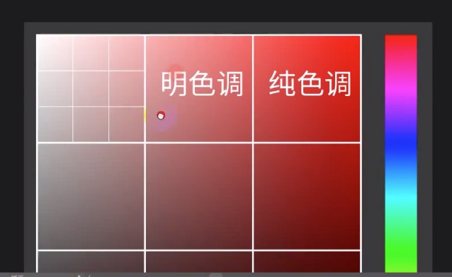
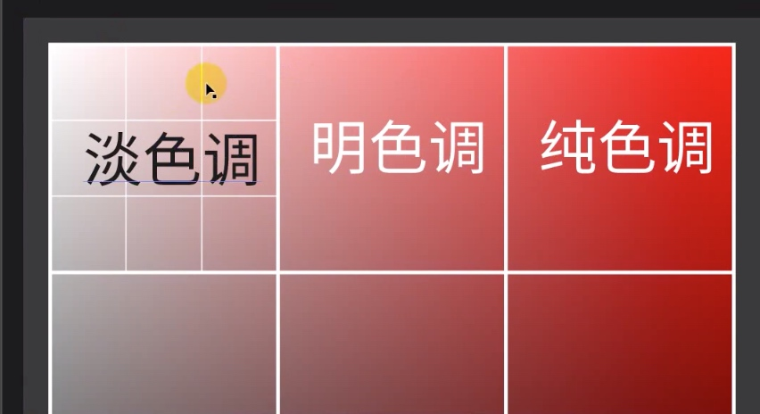
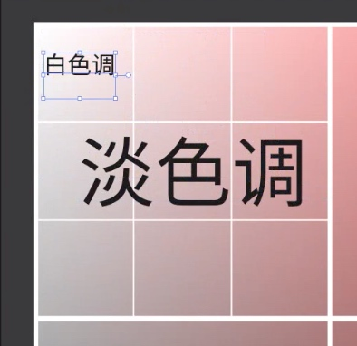
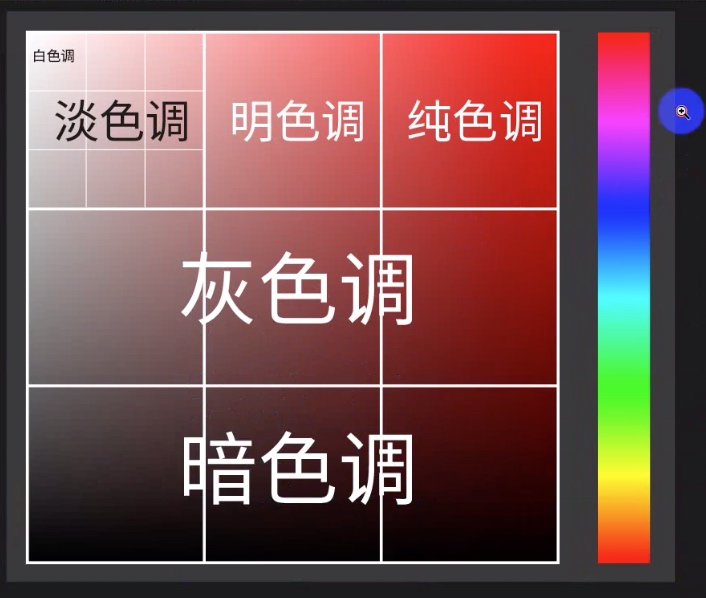
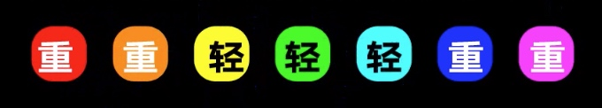
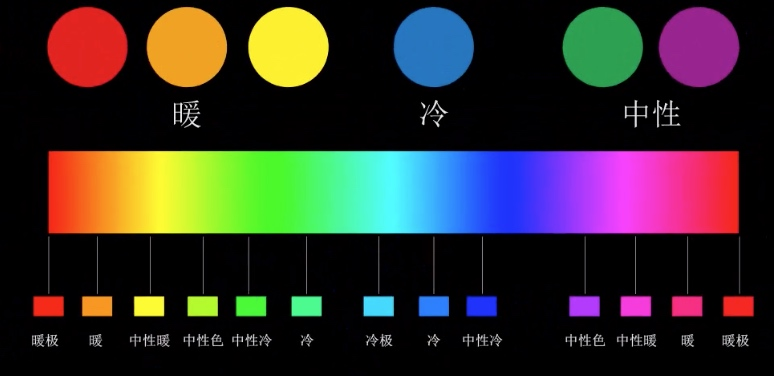
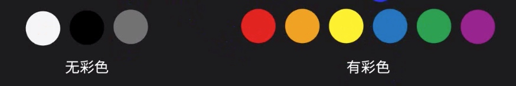
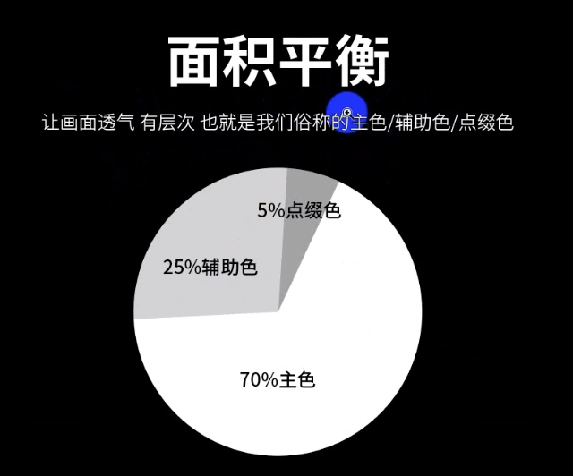

色彩三要素（H S B)
1.H=色彩的样子
2.S=颜色的纯度/饱和度
3.B=颜色的灰度/明度
4.S+B=色调
纯色调
优点：刺激/直接/活力/促销
缺点：廉价/缺少品质感
产品：廉价/便宜的 低端用户
举例：双十一促销活动 契合产品
明色调
优点：年轻/阳光/活力/明朗/干净
缺点：缺少档次
产品：耐用消费品 大众化产品
用户：18——35岁

淡色调
优点：天真/女性/纤细/轻快/高档
缺点：单薄/软弱
产品：耐用消费品 大众化的产品
用户：18~35岁之间
产品举例：女装海报/化妆品

白色调
优点：文艺/素雅/简洁/干净/高档
缺点：无趣/单调/缺乏个性
代表性产品：苹果官网 （白色调+暗色调）

灰色调
优点： 成熟/稳重/优雅/文艺
缺点：脏
产品：男性化 99%高端奢侈品
用户：男性用户偏多/拥有大额消费能力

色彩之间的六大平衡
1.色彩平衡/深浅平衡
两种及两种以上的色调进行搭配
2.色彩的轻重

冷暖平衡
1.平衡色彩给受众带来的情感平衡 （使画面具有冲击力）
一般用于摄影/电影海报/后期合成/渐变色的制作

互补平衡
1.网页/海报/生活装饰
花色和纯色平衡
背景较花哨，文字纯色，画面比较和谐
有彩色无彩色的平衡

面积平衡

颜色的运用规则
1.页面中要尽可能少的使用颜色，三种是合理的。
2.饱和度低的颜色视觉效果更柔和，也更百搭。